QRadar Plugin for Log Shipper
This document explains how to configure your QRadar integration with the Log Shipper module of the Netskope Cloud Exchange platform. This integration allows pushing alerts and events from Netskope to the QRadar platform.
To complete this configuration, you need:
A Netskope Tenant (or multiple, for example, production and development/test instances)
A Netskope Cloud Exchange tenant with the Log Shipper module already configured.
A QRadar instance.
Obtain the QRadar Server, Port, and TLS Certificate information.
Configure the QRadar Plugin.
Configure Log Shipper Business Rules for QRadar.
Configure Log Shipper SIEM Mappings for QRadar.
Validate the QRadar plugin.
Click play to watch a video.
Go to your QRadar instance.
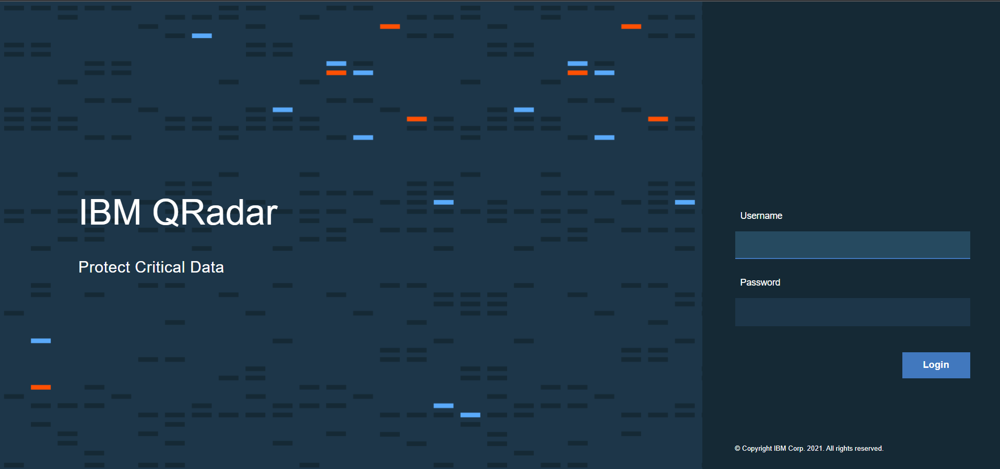 Log in to QRadar.
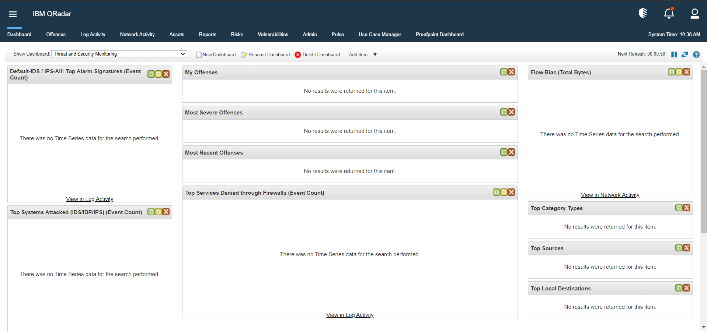 Click Admin and then click DSM Editor.
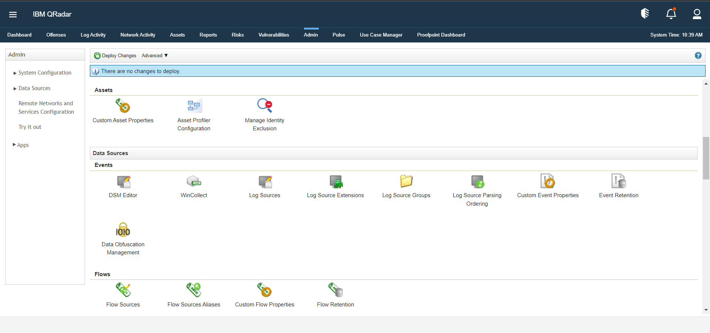 Click Create New.
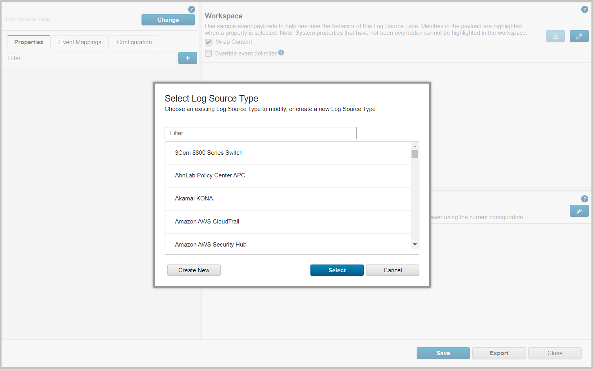 Enter a Log Source Type Name and click Save. It takes a few seconds to create a Log Source Type.
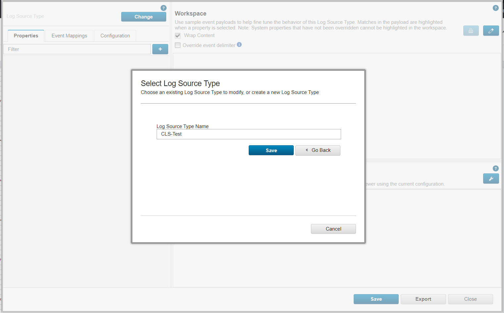 Go to your QRadar instance, click on Admin, and then click Launch.
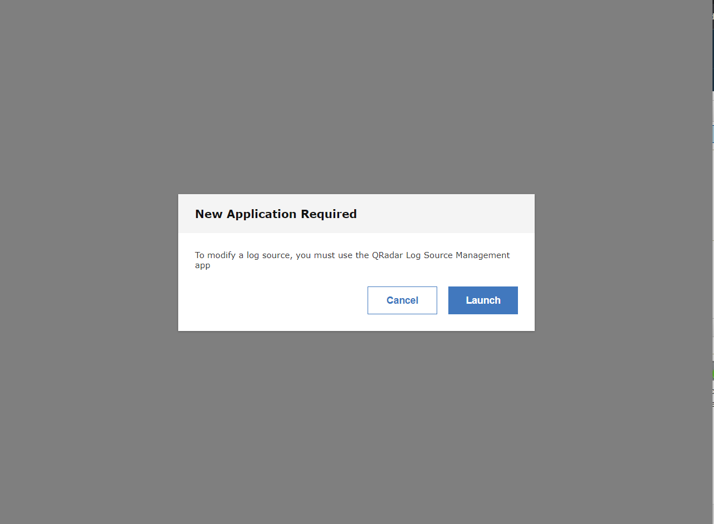 Click Log Sources.
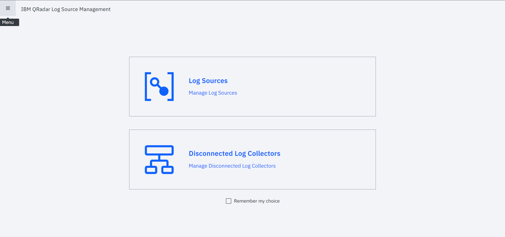 Click + New Log Source.
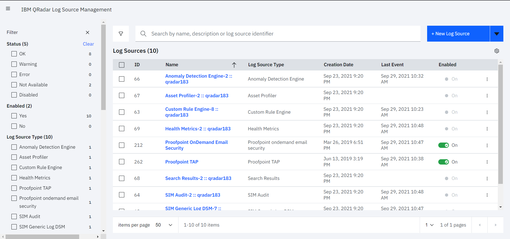 Click Single Log Source.
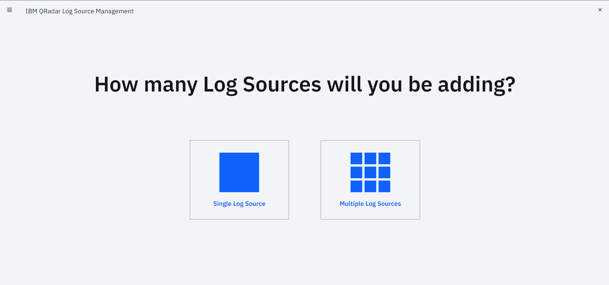 Select the Log Source Type that you created and click Step 2: Select Protocol Type.
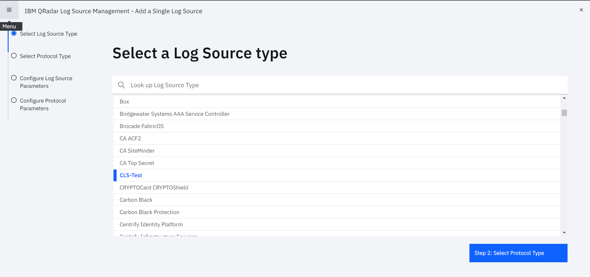 Select a Protocol Type and click Step 3: Configure Log Source Parameters.
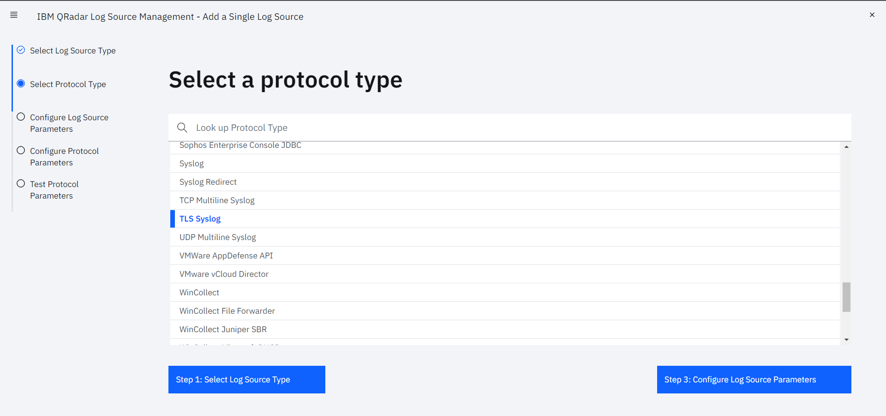 Enter a Name and click Step 4: Configure Protocol Parameters.
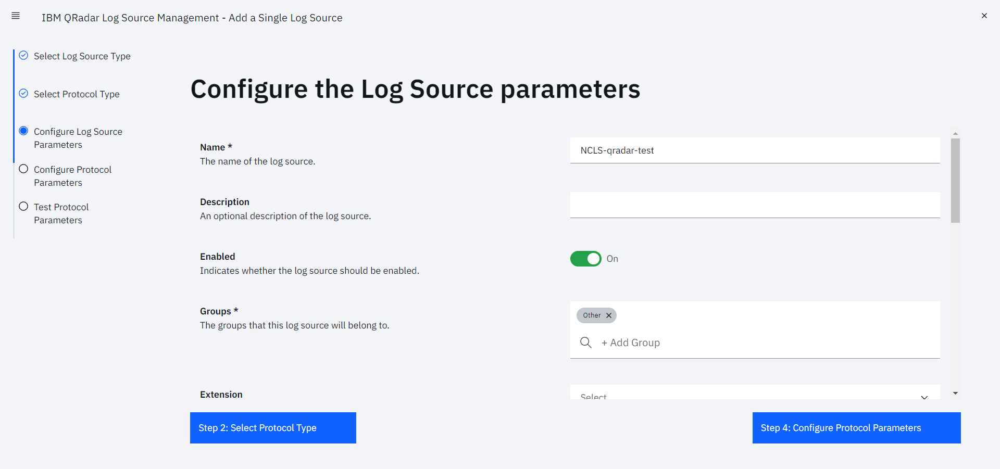 Enter the Required parameters and click Step 5: Test Protocol Parameters.
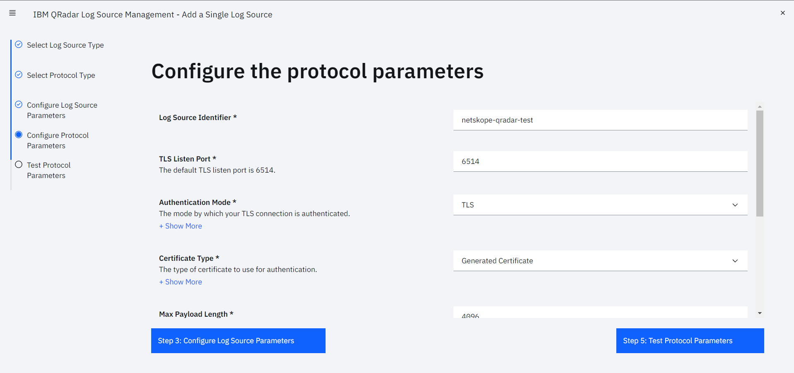 Click Skip Test and Finish.
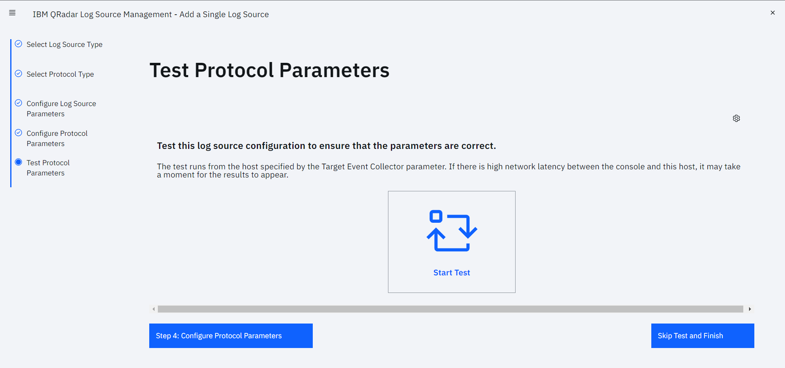 Go to your QRadar instance and click Admin > Deploy Changes. It takes few minutes to deploy changes.
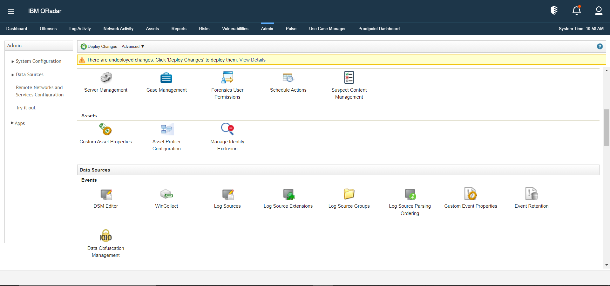 To get TLS Certificate (If you choose TLS as protocol), go to your QRadar VM and download the certificate from path
‘/opt/qradar/conf/trusted_certificates’.
Go to Settings > Plugins.
Select the QRadar box to open the plugin creation dialog.
Enter a Configuration Name.
Select a valid Mapping. (Default Mapping for all plugins are available.
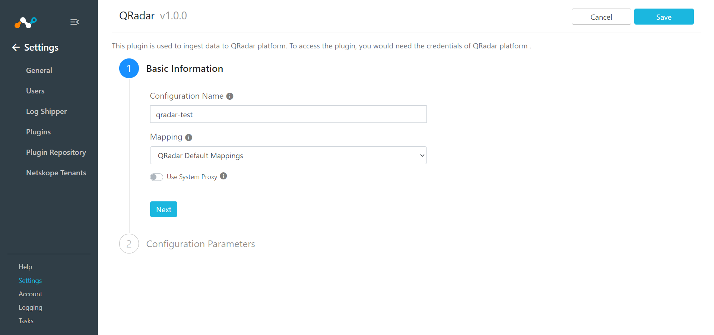 Click Next.
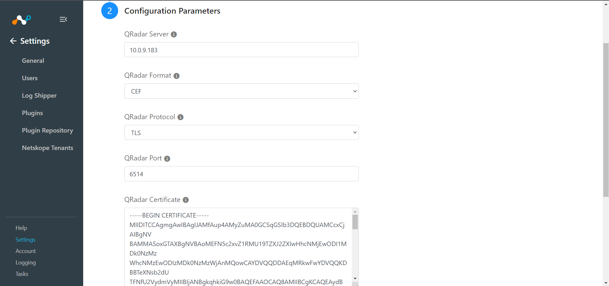 Enter a QRadar Server, select a QRadar Format and QRadar Protocol, and then enter your QRadar Port and QRadar Certificate information.
Enter Valid Extensions if you have other than the default one.
Click Save.
Go to Log Shipper > Business Rules.

Click Create New Rule.

Enter a Rule Name and select the filters to use.
Click Save.

Go to Log Shipper > SIEM Mappings and click Add SIEM Mapping.
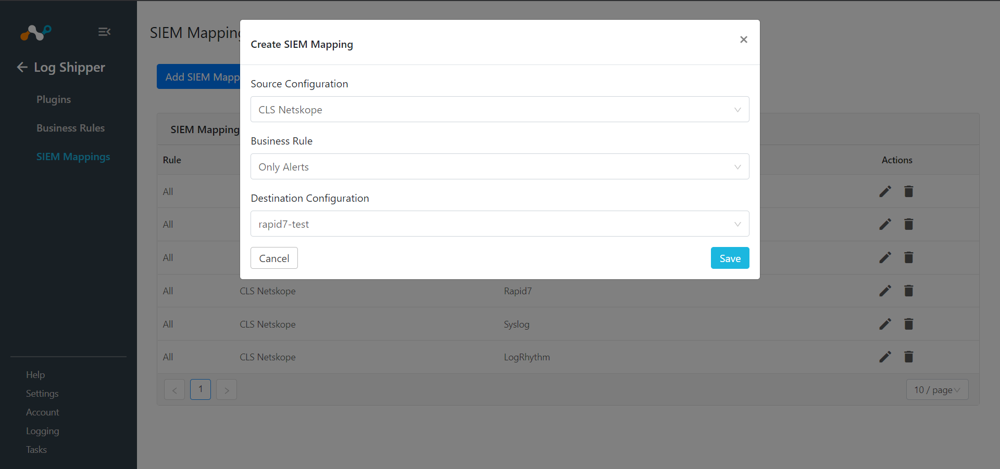 Select a Source Configuration, Business Rule, and Destination Configuration.
Click Save.
To validate the plugin workflow, you can check from Netskope Cloud Exchange and from your QRadar instance.
To validate from Netskope Cloud Exchange, go to Logging.
| 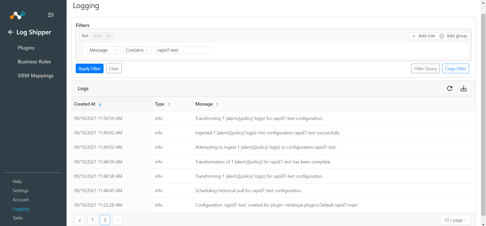 |
To validate from the QRadar instance, go to your QRadar instance and click Log Activity. You can see all logs, and can apply filters to see specific logs.
| 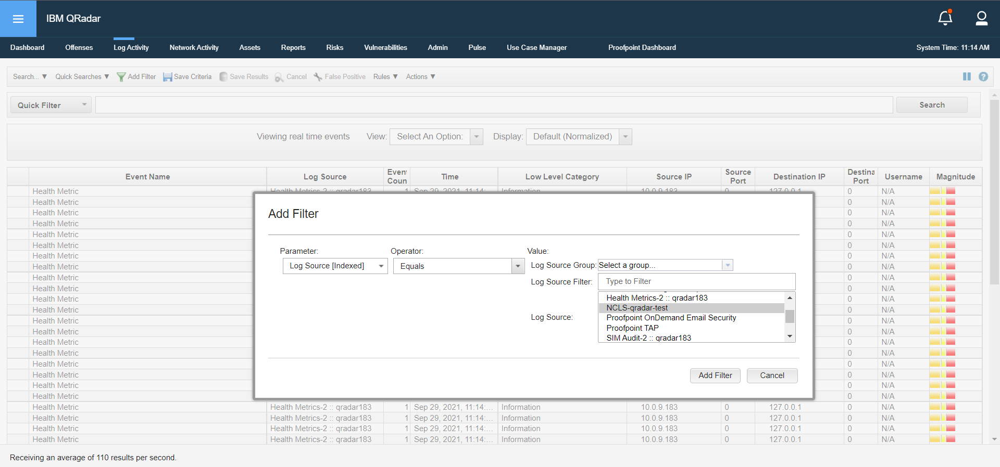 |